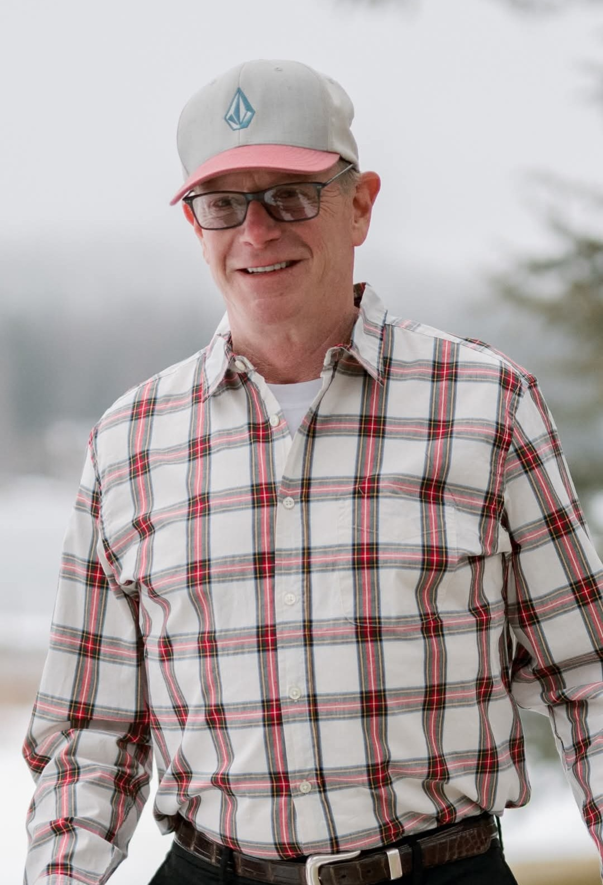

Setting the Standard Since 1980
APS specializes in the preparation and field coordination that our American energy and infrastructure clients depend on. Before surveying and exploration work begins, we evaluate geography, topography, and regulatory requirements, research land and mineral ownership, and secure the permits and agreements required for field access. Once crews begin work, we remain actively involved, ensuring operations follow project plans, safety requirements, and contractual agreements. Mark Fischbuch founded Allstate Permit Services on that responsibility in 1980, and it still defines our focus today.
Our work has spanned 25 states and territories, hundreds of successful projects, and thousands of square miles successfully permitted. We don’t outsource communication; our team has coordinated with thousands of landowners across private, state, federal, and tribal lands. Decades of experience have refined our processes, technology, and project management capabilities without losing sight of what matters most: getting the details right. We take great pride in protecting landowners, field crews, the environment, and the projects we’re entrusted with.
In August 2026, we became APS Land Services. The new name reflects the depth of expertise and range of capabilities we’ve built through decades in the field while carrying forward the standard we began with: hard work, honesty, and being exceptionally good at what we do.
Headquartered in Cache Valley, Utah, with permitting and land access work carried out coast to coast.

Mark has spent more than four decades in land services, and led the company through the growth that took it from a Texas permitting outfit to a firm trusted in 23 states. His approach hasn't changed much in forty years: know the project, know the landowner, and make safety the standard nobody has to ask about.
“A permit is just paperwork. The relationship with the landowner is the actual work.”
With over twenty years in the industry, [VP Name] oversees day-to-day project management and client communication — the direct, single point of contact clients count on from permit filing through project close.
If an APS Land Services agent has reached out, it's because a company is exploring whether the ground beneath your property can help strengthen America's energy and infrastructure — and we're the ones responsible for doing that the right way.
We contact landowners on behalf of the company we represent to secure a Limited Use Service Agreement — a temporary, tightly defined permission for a survey crew to access the property, use seismic tools to read what lies beneath the surface, and leave. It is not a lease. It is not a sale of mineral rights. It is not fracking, drilling, or mining. It does not give up any of your rights to your land. It exists for one purpose: to let a field team measure and record, safely and briefly, then go.
The agreement covers survey access only, for a defined window of time. It doesn't transfer ownership, lease your minerals, or authorize drilling of any kind — it authorizes a crew to take readings and leave the property as they found it.
Seismic survey work is designed to disturb as little ground as possible. Crews follow strict safety protocols on and off your property, and any area they use is restored to its original condition when the work is done.
The data gathered helps determine what resources exist beneath American soil — information that supports domestic energy development, stronger infrastructure, and the communities that depend on both.
Every field team operates under the same safety standard our agents have followed since 1980: proper coordination with the landowner, careful handling of equipment, and respect for the property the whole way through.
APS Land Services works in the open. If you'd like to know more before you sign anything, here's where to look — and who to ask.